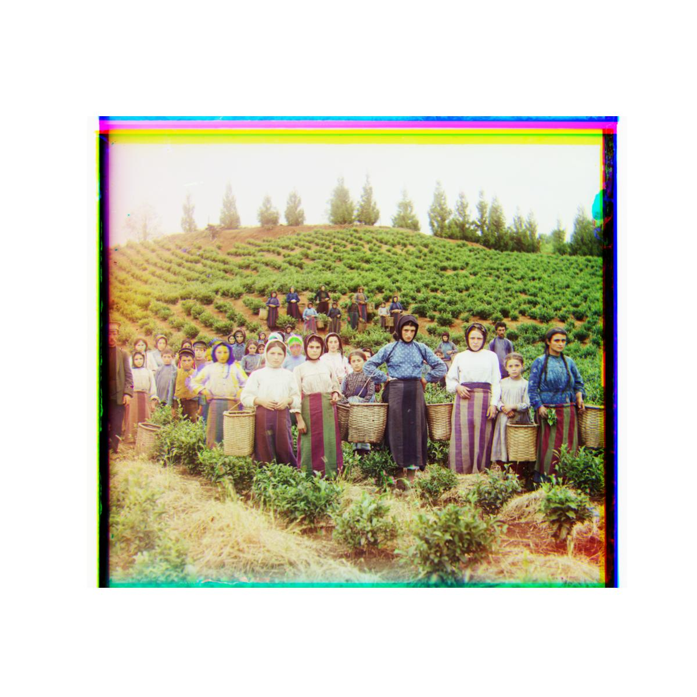
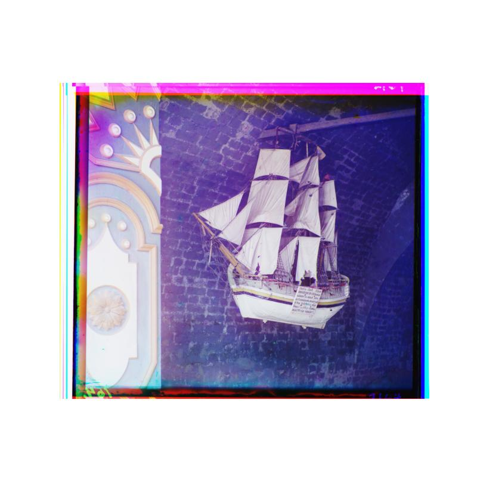

Before the color camera, Prokudin-Gorskii captured "RGB" photos by capturing photos of the
same subject using a red, green, and blue filters, independently. These triplets of photos, once
aligned with an appropriate alignment algorithm (focus of this project), will reconstruct
his images in color.
Exhaustive search alignment of small images
Method
For smaller .jpg images, I utilized an exhaustive search over all (horizontal, vertical) combinations of
image translations for a [-15, 15] range.
I pre-processed the images by centering the values of each channel, i.e. by subtracting the mean of a channel
from each pixel in the image, in order for the algorithm to focus on aligning intensity differences rather than raw intensity.
To prevent the alignment algorithm from being skewed to focus on aligning the black edges of the images,
I also cropped the images by 10% from each edge.
I utilized np.roll to translate my images, so to prevent the rolled-over pixels from
negatively influencing the alignment, I sliced out only the internal, non-rolled region of my channel and
reference channel.
I then calculated the Normalized Cross Correlation (NCC) between the internal region of my channel I am
aligning (red & green) and the reference channel (blue). I reasoned that NCC is a better metric for alignment than
other metrics, such as the L2 Norm, since the normalization process of dividing each image by its norm is
essentially normalizing for the standard deviation in the images. This allows the algorithm to focus on features in
the image, rather than contrast differences between color channels.
Images
cathedral.jpg
R (3, 12) | G (2, 5)
monastery.jpg
R (2, 3) | G (2, -3)
tobolsk.jpg
R (3, 6) | G (3, 3)
Image pyramid alignment of large images
Method
For larger images where the computational cost of exhaustive search is prohibitive,
I applied my alignment algorithm to an image pyramid instead.
I downsample the channels using cv.resize by a scale of 1/2
until the image is small enough (less than 500 pixels in the largest dimension)
for an exhaustive search. I apply a Gaussian blur on the image before downsampling
by the anti_aliasing parameter to help minimize loss of features when
downsampling.
I complete an exhaustive search alignment on the downsampled image using the same
algorithm described above to find the best (x, y) alignment on the small image.
I then scale the (x, y) displacement by 2 to reverse the downsampling and use
(2x, 2y) as the starting point for the exhaustive alignment search on the larger image.
For computational efficiency, since calculating the NCC becomes more costly for larger images,
the search on larger images is only over [-5, 5].
I continue passing the (x, y) displacement guess from smaller images down the image pyramid
and refining at each level until I find the best displacement for the full size image.
Images
church.tif
R (-4, 58) | G (4, 25)

harvesters.tif
R (13, 124) | G (17, 60)
icon.tif
R (23, 89) | G (17, 41)
italil.tif
R (35, 77) | G (21, 38)
lastochikino.tif
R (-9, 75) | G (-2, -3)
lugano.tif
R (-29, 93) | G (-16, 41)
melons.tif
R (13, 178) | G (11, 82)
self_portrait.tif
R (37, 176) | G (29, 79)
siren.tif
R (-25, 96) | G (-6, 49)
three_generations.tif
R (11, 112) | G (14, 53)
Problem: aligning emir.tif
My algorithm as described above had much difficulty aligning emir.tif,
which is likely because this focus of this image exhibits mostly vibrant blues. This
causes the blue channel pixels to be low value with the red channel pixels of high value,
which would deflate the NCC for the correct displacement, as shown below.
Method
Despite the red and blue channels having almost opposite pixel intensities, the edge features
of light to dark transition are still preserved between the two channels, so alignment may benefit
from aligning the edges in the image instead of all pixels.
To detect edges, I first create simple 3x3 kernels to detect horizontal and vertical edges.
The horizontal edge kernel is [[0, 0, 0], [-1, 0, 1], [0, 0, 0]] and analogously,
the vertical edge kernel is [[0, -1, 0], [0, 0, 0], [0, 1, 0]]. When scanning a line
of pixels, this kernel will output a high output value (edge detected) if the line transitions from
a high to low value or vice versa.
The absolute value of the horizontal and vertical edge kernels are
summed to create an edge-only image.
Upon only implementing the above steps, I noticed some edges appear blurry, so I binarize the
image using a pixel value threshold of 0.2.
The image pyramid alignment algorithm is then used on these edge features to yield the optimal
alignment.
Image
emir.tif
R (40, 107) | G (24, 49)
Images of my choice
mills.tif
R (23, 125) | G (14, 56)
dome.tif
R (-6, 125) | G (-4, 52)

boat.tif
R (81, 134) | G (39, 42)